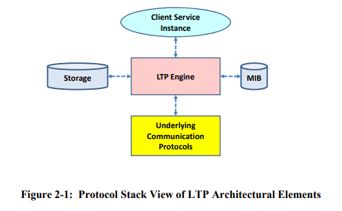

LTP Underlying Communications API
In the Licklider Transmission Protocol (LTP) Specification issued by CCSDS 734.1-B-1, the elements of a LTP architecture is shown as follows:

The LTP Engine and MIB is implemented and configured by ION, and the Client Service Instance is either BPv6 or BPv7. The storage is provided by the host system through the ICI APIs.
The Underlying Communication Protocol element is responsible for data and control message exchanges between two peered LTP Engines. It is not responsible for flow control, error correction/detection, and in-ordered delivery.
For a spacecraft, the LTP Engine will execute the LTP protocol logic and handing the LTP segments to the underlying communication services provided in the form of a simple UDP socket or a radio frequency/optical telecommunication system. In ION, the standard underlying communications protocol is UDP since it is widely available in terrestrial computer systems. In actual deployment, the UDP protocol may need to be substituted by a different ground-based or flight communications system.
In the document we describe a few essential APIs for any externally implemented underlying communication protocols to interface with LTP engine and perform the most basic tasks of (a) submitting a received LTP segments to the LTP Engine for processing and (b) acquiring an LTP segment from the LTP Engine for transmission to its peer.
Connecting to the LTP Engine
There are several steps for an external application to connecting to LTP:
- The ltp service must be running on the host system. The ltp service is started by the ION system and is configured by the
.ltprcfile processedltpadmin. See the Configuration File Tutorial to understand how BP and LTP services are instantiated.- Typically, to ensure that the ltp service is running before the communications protocols try to connect to it, the underlying communication protocol service is invoked as part of LTP instantiation. See manual page for
ltprcfor more details.
- Typically, to ensure that the ltp service is running before the communications protocols try to connect to it, the underlying communication protocol service is invoked as part of LTP instantiation. See manual page for
- The external application must make sure LTP is initialized by calling the
ltpInit()API. - Once
ltpInitcalled returned successfully, it must obtain access to ION SDR and detemine the associated LTPspan(based on a peer engine number) for which communication service will be provisioned. This is done by using thefindSpan()API. Aspandefines the communication parameters between two LTP engine peers. - Acquire the semaphore used by the associated LTP engines - for the span - to indicate the availability of a segment for transmission. The presences of a valid semaphore is also indication that the span is currently active.
- Use the
ltpDequeueOUtboundSegmentAPI to acquire each available segment from the LTP Engine for transmission to the peer entity.
In the following section we will describe the private APIs used by the underlying communication protocols. There are other APIs for external processes to use LTP as a reliable point-to-point data transmission service, but they are not described in this document; they are available in the manual pages.
LTP Data Structure
Here is a diagram of the major LTP data structures and their relationships.
+----------------------------------+----------------------------------+
| | |
| non->olatile (SDR heap) | volatile (working memory ION) |
| | |
| | |
| LtpDB | LtpVdb |
| + (list) | + (list) |
| +---> spans +--+ | +-----+ spans+------+ |
| | | | | | |
| +---> seats +---------+ | +-----+ seats+---+ | |
| | | | | | |
| | | | | | |
| LtpSpan <--------+ | | LtpVspan <----------+ |
| + | | + | |
| +---> importSessions+----+ | +-> importSessions+--+ |
| | (list) | | | (list) | | |
| +---> exportSessions+------+ | | | |
| | | | | LtpVseat <-------+ | |
| LtpSeat <---------------+ | | | | |
| | | | | |
| | | | | |
| LtpImportSession <---------+ | | LtpVImportSession<-----+ |
| | | |
| | | |
| LtpExportSession <-----------+ | |
| | |
+----------------------------------+----------------------------------+
-
LtpDB: The LTP database is a global database that contains the LTP configuration information for the entire system. It is a persistent data stored in the SDR's heap - assuming the SDR is implemented in a non-volatile medium such as a disk or a battery backed RAM. -
LtpSpan: A span is a communication channel between two LTP engine peers. A span is defined by a unique span number and a set of communication parameters stored in a non-volatile database. Each instance ofLtpSpanis tracked as an element in the LTP database under theLtpDB.spanslist. -
LtpSeat: A seat is the reception process for LTP and its parameters are stored under LtpSeat, and its tracked as an element in the listLtpDB.seats. -
LtpImportSessionandLtpExportSessionare tracked by lists in theLtpSpanstructure. -
LtpVdb: The LTP volatile database is a global database that contains the LTP configuration information for the entire system. It is a volatile data stored in the working memory and not expected to persist through power reset. It tracks, in two lists, each instance ofLtpVspanandLtpVseatthat are currently active. -
LtpVspan: contains the state information of an active span in the working memory. It is tracked as an element in the listLtpVdb.spans. -
LtpVseat: contains the state information of an active seat in the working memory. It is tracked as an element in the listLtpVdb.seats. -
LtpVImportSession: contains the state information of an active import session in the working memory. It is tracked as an element in the listLtpVspan.importSessions.
LTP APIs for implementation of underlying communication protocol
Header
ltpInit
Function Prototype
Parameters
estMaxExportSessions: name of the endpoint
Return Value
- 0: success
- -1: any error
Example Call
/* Note that ltpadmin must be run before the first
* invocation of ltplso, to initialize the LTP database
* (as necessary) and dynamic database.*/
if (ltpInit(0) < 0)
{
putErrmsg("aoslso can't initialize LTP.", NULL);
/* user error handling routine here */
}
Description
This call attaches to ION and either initializes a new LTP database or loads the LTP database of an existing service. If the value of estMaxExportSessions is positive and no existing LTP service are found, then LTP service will be initialized with the specified maximum number of export sessions indicated. If the value of estMaxExportSessions is zero or negative, then ltpInit will load the LTP database or otherwise quit if no existing LTP service is found. NOTE: for the underlying communication protocol implementation, setting ltpInit(0) is appropriate since the intention is to load an existing LTP service only.
Once a LTP service is either found or initialized, it loads the address to the LTP database object defined by LtpDB in ltpP.h.
findSpan
Function Prototype
Parameters
engineId: The engine number of the peer LTP enginevspan: pointer to the pointer of the LTP span object in ION working memory that encapsulates the current state of the LTP spanvspanElt: pointer to the address stored in a list of span in the volatile database defined byLtpVdb
Return Value
- none
Example Code
sdr = getIonsdr();
CHKZERO(sdr_begin_xn(sdr)); /* Lock SDR. */
findSpan(remoteEngineId, &vspan, &vspanElt);
if (vspanElt == 0)
{
sdr_exit_xn(sdr);
putErrmsg("No such engine in database.", itoa(remoteEngineId));
/* user error handling routine here */
}
if (vspan->lsoPid != ERROR && vspan->lsoPid != sm_TaskIdSelf())
{
sdr_exit_xn(sdr);
putErrmsg("LSO task is already started for this span.",
itoa(vspan->lsoPid));
/* user error handling routine here */
}
/* unlock the SDR */
sdr_exit_xn(sdr);
Description
This function searches the volatile database for the span that corresponds to the specified engine number. If the span is found, then the pointer to the span object is stored in the vspan parameter and the address of the span object in the list of spans in the volatile database is stored in the vspanElt parameter. If the span is not found, then vspanElt parameter is set to 0.
Note: In addition to check the value of vspanElt, one can also check for the process ID of the LSO task (the LTP output process, i.e., the underlying communication protocol) of the span has not already been serviced by another protocol implementation.
ltpDequeueOutboundSegment
Function Prototype
Parameters
vspan: address to the volatile LTP span objectbuf: the buffer in which outbound LTP segments are stored
Return Value
length of segment: success0: session associated to the dequeued segment has already closed; no need to transmit any data-1: any error
Example Code
segmentLength = ltpDequeueOutboundSegment(vspan, &segment);
if (segmentLength < 0)
{
/* handle error */
}
if (segmentLength == 0)
{
/* session is closed, take appropriate action */
}
/* transmit the segment */
Description:
This function dequeues a LTP segment, based on the segSemaphore in vspan object, into a buffer space for the calling task to process for transmission. The returned value is the length of the LTP segment dequeue; 0 if the segment belongs to a session that already closed (therefore no action is required), and -1 if an error occurred.
If this call is implemented in a loop, then it is suggested that the loop monitors the segSemaphore in vspan to detect the termination of the semaphore using the sm_SemEnded(vspan->segSemaphore) call. If the semaphore has ended, it means the span associated with the underlying communication protocol instance has ended. This is the right time to end the task itself.
After each successful iteration in a loop, it is recommended that you call sm_TaskYield() to give other tasks a chance to run. A good example code to read is the udplso.c program.
ltpHandleInboundSegment
Function Prototype
Parameters
buf: pointer to buffer storing the received LTP segment, to be submitted to LTP engine for processinglength: the length of the received LTP segment
Return Value
0: segment successfully handled-1: any error
Example Code
if (ltpHandleInboundSegment(buffer, segmentLength) < 0)
{
putErrmsg("Can't handle inbound segment.", NULL);
/* handle error here */
}`
Description
This function submits received LTP segments to LTP engine for processing. The return value is 0 if the segment is successfully handled, and -1 if an error occurred. A successfully handled segment includes cases where the segments are ignored for several possible, non-critial, non-fatal discrepencies such as wrong LTP version number, closed session number, session under cancellation (therefore the segment was not processed) and other conditions are may occur under nominal condition.
To develop one's own underlying communication protocol implementation to support LTP, the udplsi.c and udplso.c programs are good templates to use.